Focus
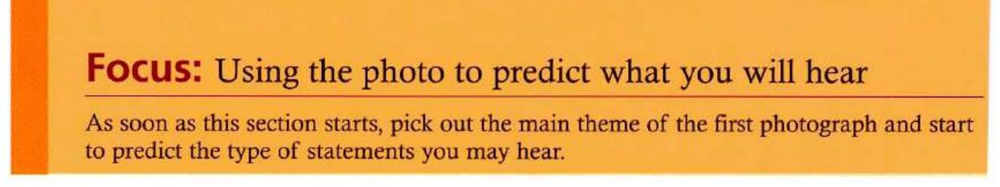
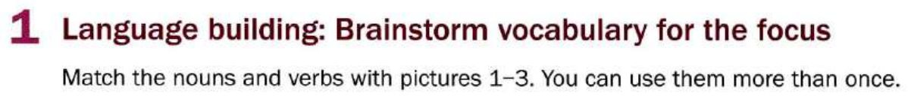
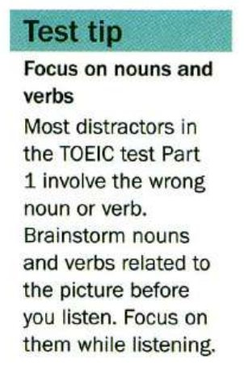
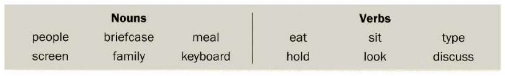
Tap the words that match each picture. Words can be used more than once.
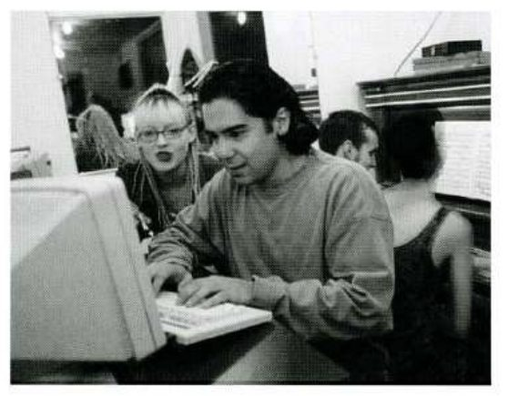
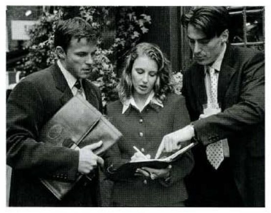
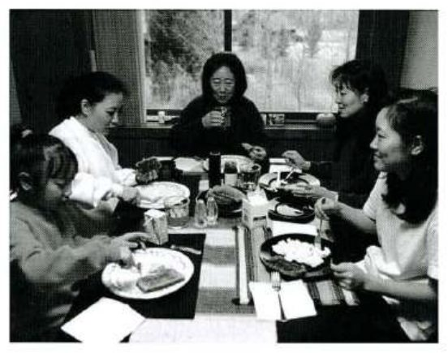
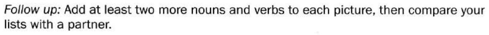
Possible answers
Picture 1 — glasses, computer / work, talk
Picture 2 — street, diary / point, write
Picture 3 — fork, food, window / chat, smile
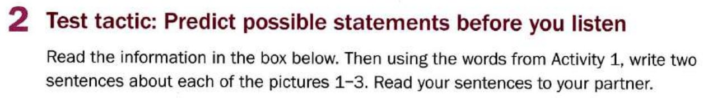
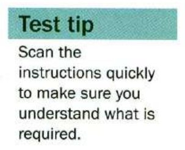
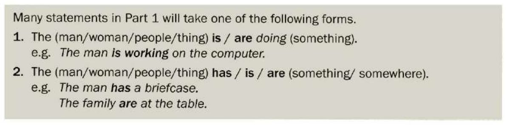
Possible answers
Picture 1 — The woman is telling the man what to type. / They are in an Internet café.
Picture 2 — The woman is writing in her diary. / The men and the woman are in the street.
Picture 3 — The family are sitting at the table. / There is a lot of food on the table.
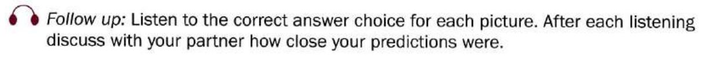
Tapescript
Picture 1 The man is focusing on the screen.
Picture 2 The people are discussing something.
Picture 3 The family's eating a meal.
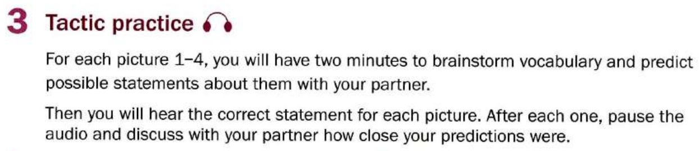
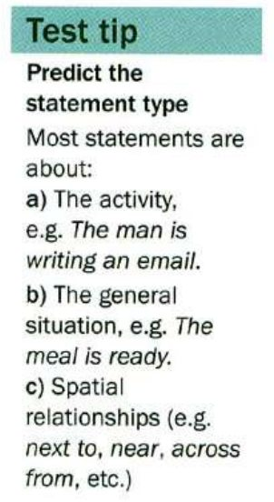
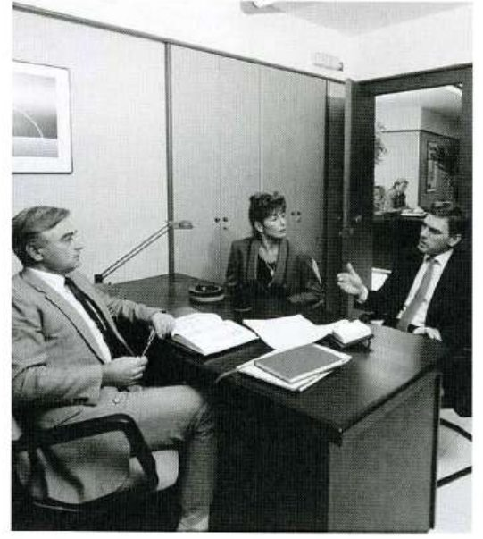
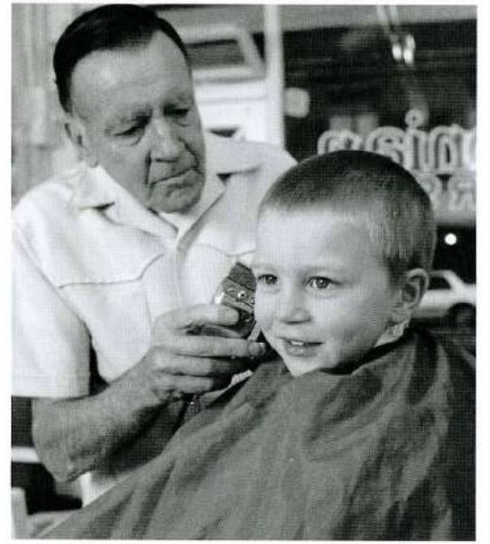
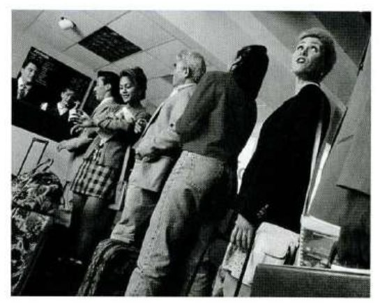
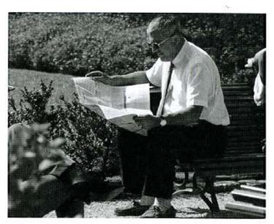
Possible answers & tapescript
chair, desk, discuss, meeting, office, papers, sit
The people are working in the office. / The people are discussing a project.
Tapescript: They are having a meeting.
hair, barber, sit, white jacket, cut, shave, short blonde hair
The barber is wearing a white jacket. / The boy has short blonde hair.
Tapescript: The boy is getting his hair cut.
luggage, check-in, line, ground staff, wait
The passengers are waiting to check in. / There is a long line at the check-in counter.
Tapescript: The people are waiting in line.
bench, man, newspaper, park, sit, sunny, read
The man is sitting on a bench in the park. / The man is reading in the park.
Tapescript: The man is reading a newspaper.
Understanding natural English
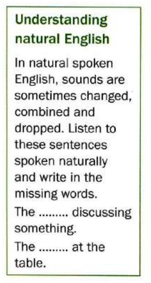
Tapescript
The people are discussing something.
The family's at the table.
Mini-test
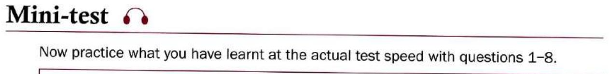
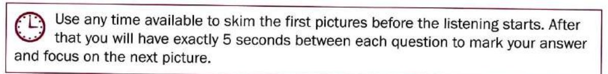
The recording runs straight through all eight questions, just like the real test. Choose an answer for each photo as you listen, then check.
Learn by doing: Writing stories
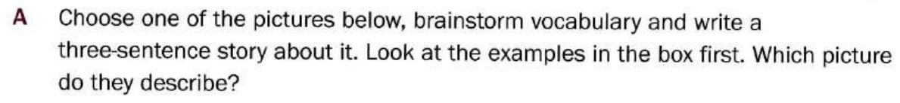
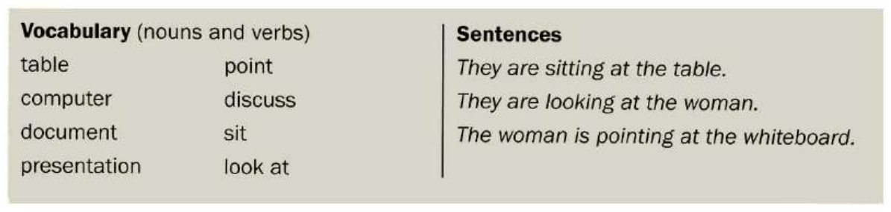
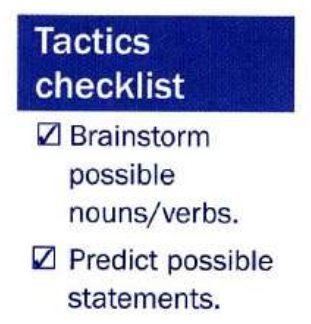
Which picture do the example sentences describe?
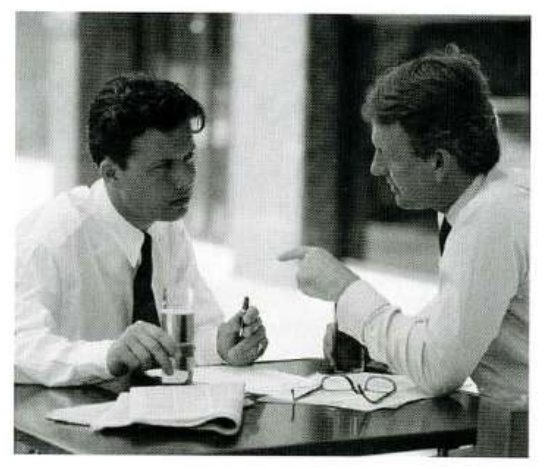
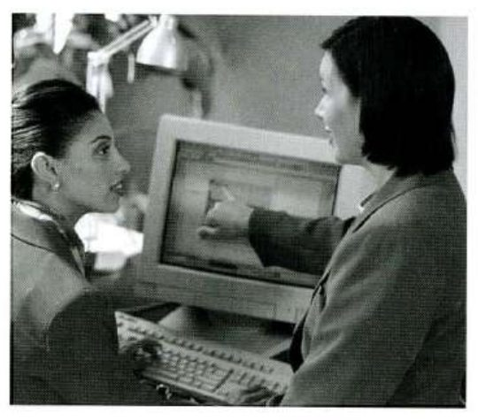
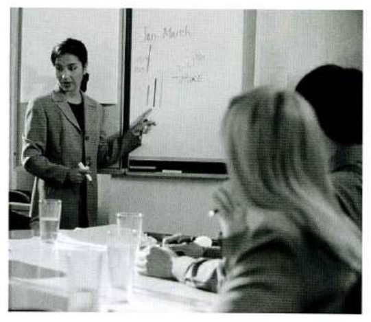
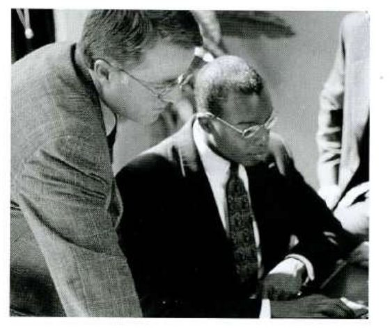
Possible answers
Picture 1 Two men are sitting at a table with documents in front of them. / One man is telling the other man something. / The man taking notes has to prepare a presentation.
Picture 2 They are looking at the computer. / One woman is pointing at the screen. / She is saying something important.
Picture 3 The examples given in the box on the page describe this picture.
Picture 4 Two men are looking at something. / One man is sitting down. / They are thinking about a problem.
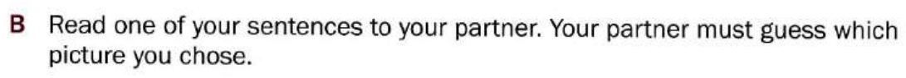
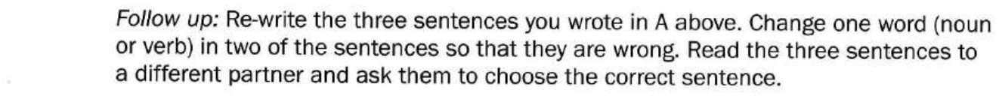
Further study
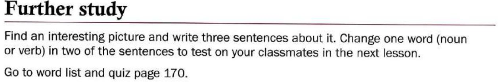
Vocabulary practice
The 23 words behind this unit, drilled four ways — meaning, context, speed, then spelling. Anything you get wrong comes straight back before the round ends, and the game keeps asking about your weakest words. Replay it as often as you like.